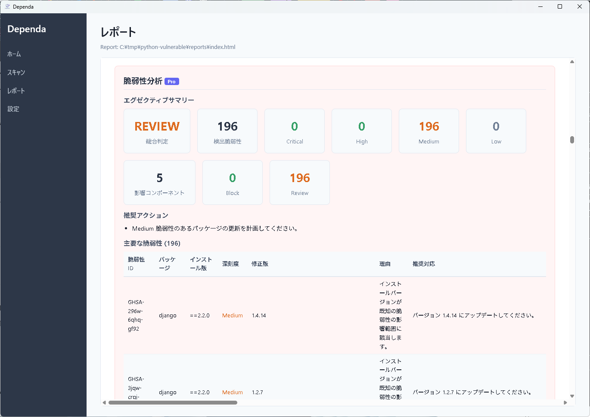
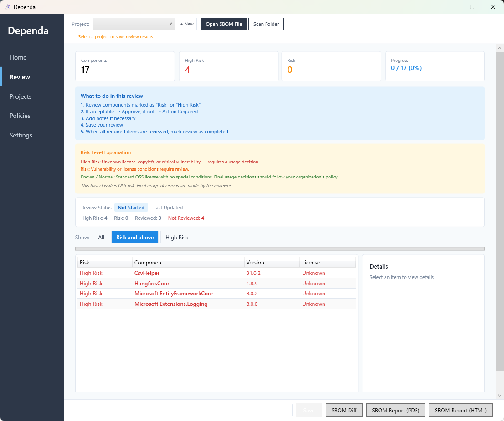

Chapter 3: 脆弱性分析とリスク分析
CVSS スコア判定・RiskReason・RecommendedAction・Evidence・Confidence
脆弱性とは
脆弱性（ぜいじゃくせい）とは、ソフトウェアに含まれるセキュリティ上の弱点のことです。悪意のある攻撃者がこの弱点を利用すると、データの漏洩や不正アクセスなどの被害が発生する可能性があります。
あなたのプロジェクトが使っているライブラリ（外部の部品）に脆弱性が見つかった場合、そのライブラリを更新するなどの対策が必要です。Dependa は SBOM に含まれる脆弱性情報を分析し、リスクの度合いに応じて分類します。
CVSS スコアと重大度
CVSS（Common Vulnerability Scoring System）は、脆弱性の深刻さを 0.0～10.0 の数値で表す国際的な基準です。スコアが高いほど危険度が高いことを意味します。
| 重大度 | CVSS スコア | 説明 |
|---|---|---|
| Critical | 9.0 ~ 10.0 | 非常に危険。早急な対策が必要です。 |
| High | 7.0 ~ 8.9 | 危険度が高い。速やかな対策を推奨します。 |
| Medium | 4.0 ~ 6.9 | 中程度のリスク。計画的に対処してください。 |
| Low | 0.1 ~ 3.9 | リスクは低め。状況に応じて対応してください。 |
v2.0 リスク分析
Dependa v2.0 では、脆弱性検出に加えて リスク分析 を統合しました。各パッケージに以下の情報が付与されます。
| 項目 | 説明 |
|---|---|
| RiskReason | そのパッケージがリスクと判定された理由です。（例: 「Critical 脆弱性が 2 件検出」「ライセンスが Prohibited」） |
| RecommendedAction | 推奨される対処方法です。（例: 「バージョン X.Y.Z 以上に更新」「代替パッケージを検討」） |
| Evidence | リスク判定の根拠となるデータです。（例: CVE ID、CVSS スコア、ライセンス名） |
| Confidence | リスク判定の確信度です。（High / Medium / Low） |


リスクレベル
v2.0 では、パッケージのリスクレベルは以下の 3 段階で表示されます。
| リスクレベル | 説明 |
|---|---|
| High Risk | Critical/High の脆弱性、または Prohibited ライセンスが含まれています。早急な対処が必要です。 |
| Risk | Medium 脆弱性、Caution ライセンス、またはその他の確認事項があります。計画的に対処してください。 |
| Known-Normal | 既知の問題がなく、正常と判定されたパッケージです。 |
ローカル照合
Dependa にはアプリ内にアドバイザリデータベース（JSON 形式）が組み込まれています。スキャン時に、検出された各ライブラリのバージョンをこのデータベースと照合し、既知の脆弱性を検出します。
- インターネット接続がなくても利用可能です。
- Free プランでもローカル照合は使えます。
- データベースはアプリの更新時に最新化されます。
オンライン照合（OSV API）PRO
Pro プランでは、Google が提供する OSV（Open Source Vulnerabilities）API を使ったオンライン照合が利用できます。
- ローカルデータベースより新しい脆弱性情報も検出できます。
- スキャン時にインターネット接続が必要です。
- 設定画面の「オンライン脆弱性照合」を ON にすると有効になります。
ローカル照合とオンライン照合の結果はマージ（統合）され、重複なく一覧表示されます。
ポリシー判定ルール
Dependa は分析結果に基づき、ポリシー設定に従ってリスクを分類します。
High Risk になる条件: Critical または High の脆弱性が 1 件でも検出された場合、そのパッケージは High Risk と判定されます。
Medium 以下の脆弱性のみの場合は Risk となりますが、リスクがゼロではないため、計画的な対応を推奨します。
Chapter 3: Vulnerability & Risk Analysis
CVSS scoring, RiskReason, RecommendedAction, Evidence, and Confidence
What Are Vulnerabilities?
A vulnerability is a security weakness found in software. If a malicious attacker exploits this weakness, it can lead to data leaks, unauthorized access, or other security incidents.
If a vulnerability is discovered in a library (external component) that your project depends on, you need to take action, such as updating that library. Dependa analyzes vulnerability information in your SBOM and classifies the risk level.
CVSS Score and Severity
CVSS (Common Vulnerability Scoring System) is an international standard that rates the severity of vulnerabilities on a scale from 0.0 to 10.0. A higher score means a greater level of danger.
| Severity | CVSS Score | Description |
|---|---|---|
| Critical | 9.0 ~ 10.0 | Extremely dangerous. Immediate action is required. |
| High | 7.0 ~ 8.9 | High risk. Prompt action is recommended. |
| Medium | 4.0 ~ 6.9 | Moderate risk. Plan to address in a timely manner. |
| Low | 0.1 ~ 3.9 | Low risk. Address as appropriate. |
v2.0 Risk Analysis
In Dependa v2.0, Risk Analysis is integrated with vulnerability detection. Each package includes the following information:
| Field | Description |
|---|---|
| RiskReason | Why this package was flagged as a risk. (e.g., "2 Critical vulnerabilities detected", "Prohibited license") |
| RecommendedAction | Recommended remediation action. (e.g., "Update to version X.Y.Z or later", "Consider alternative package") |
| Evidence | Supporting data for the risk assessment. (e.g., CVE IDs, CVSS scores, license names) |
| Confidence | Confidence level of the risk assessment. (High / Medium / Low) |


Risk Levels
In v2.0, package risk levels are displayed in three tiers:
| Risk Level | Description |
|---|---|
| High Risk | Contains Critical/High vulnerabilities or Prohibited licenses. Immediate action required. |
| Risk | Contains Medium vulnerabilities, Caution licenses, or other review items. Plan to address. |
| Known-Normal | No known issues found. Package is assessed as normal. |
Local Lookup
Dependa includes a built-in advisory database (JSON format). During scanning, each detected library version is compared against this database to identify known vulnerabilities.
- Works without an internet connection.
- Available on the Free plan.
- The database is updated when the app is updated.
Online Lookup (OSV API) PRO
With the Pro plan, you can use Google's OSV (Open Source Vulnerabilities) API for online lookups.
- Can detect newer vulnerabilities not yet in the local database.
- Requires an internet connection during scanning.
- Enable "Online Vulnerability Lookup" in the Settings screen to activate.
Results from local and online lookups are merged and displayed without duplicates.
Policy Rules
Dependa classifies risks according to your policy settings based on the analysis results.
High Risk condition: If even one Critical or High severity vulnerability is detected, the package is classified as High Risk.
If only Medium or lower vulnerabilities are found, the package is classified as Risk. Since the risk is not zero, planned remediation is recommended.